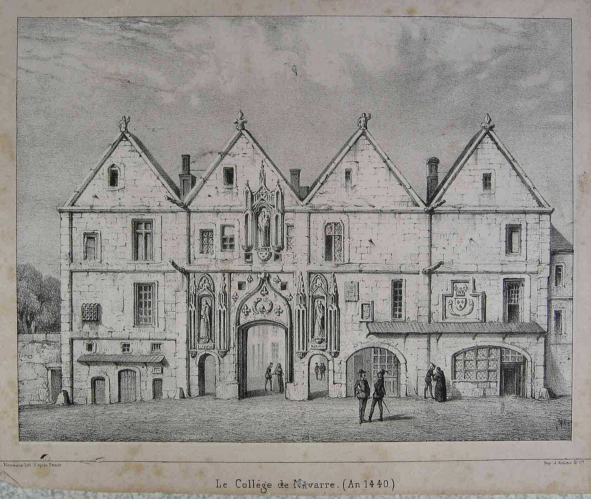
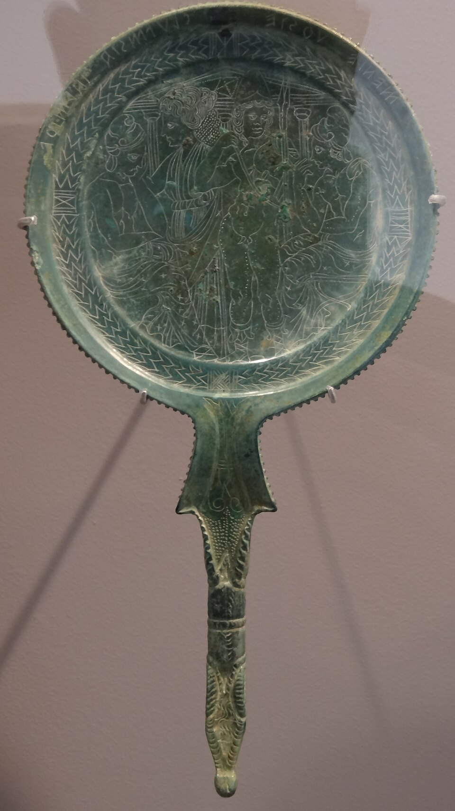
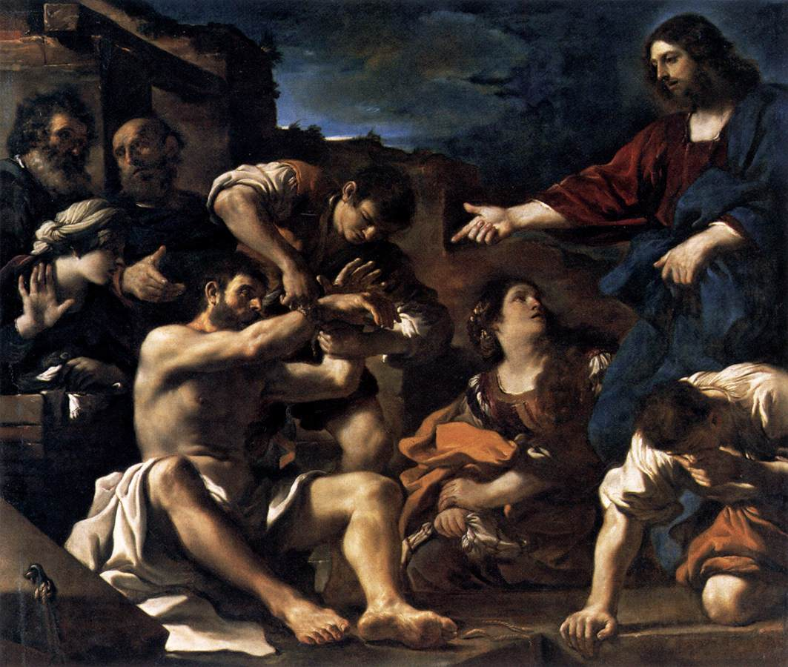
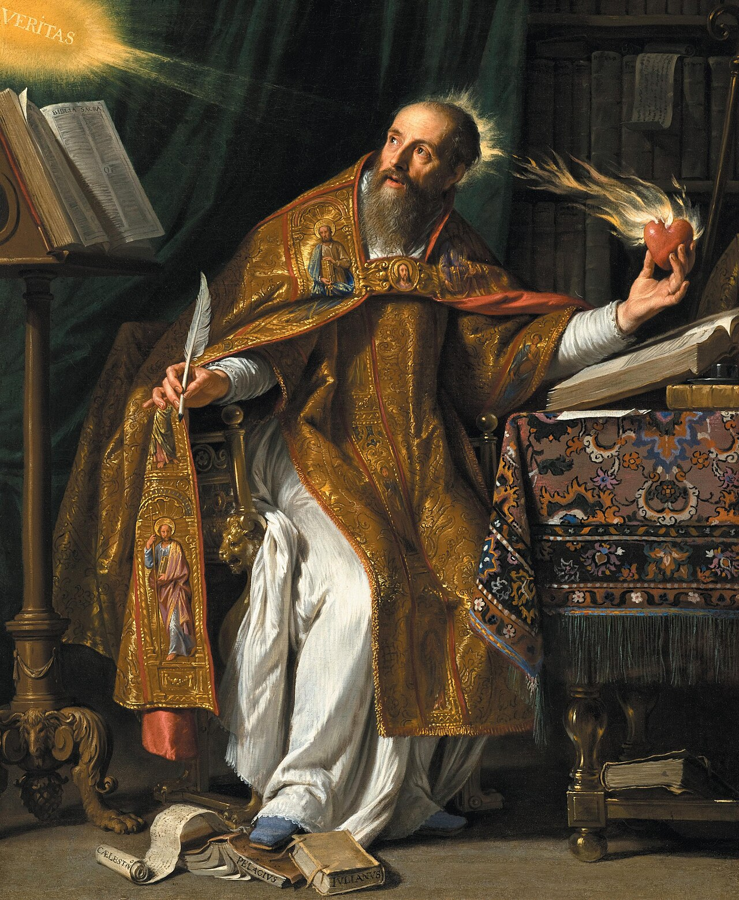
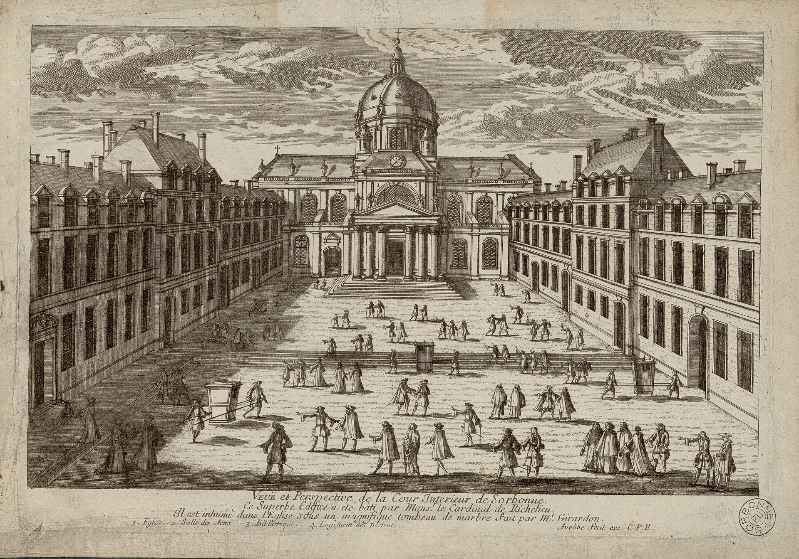
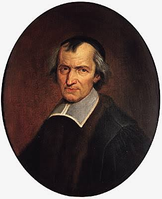
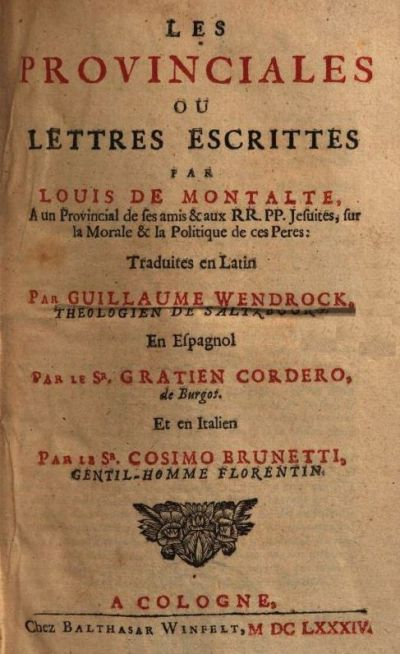
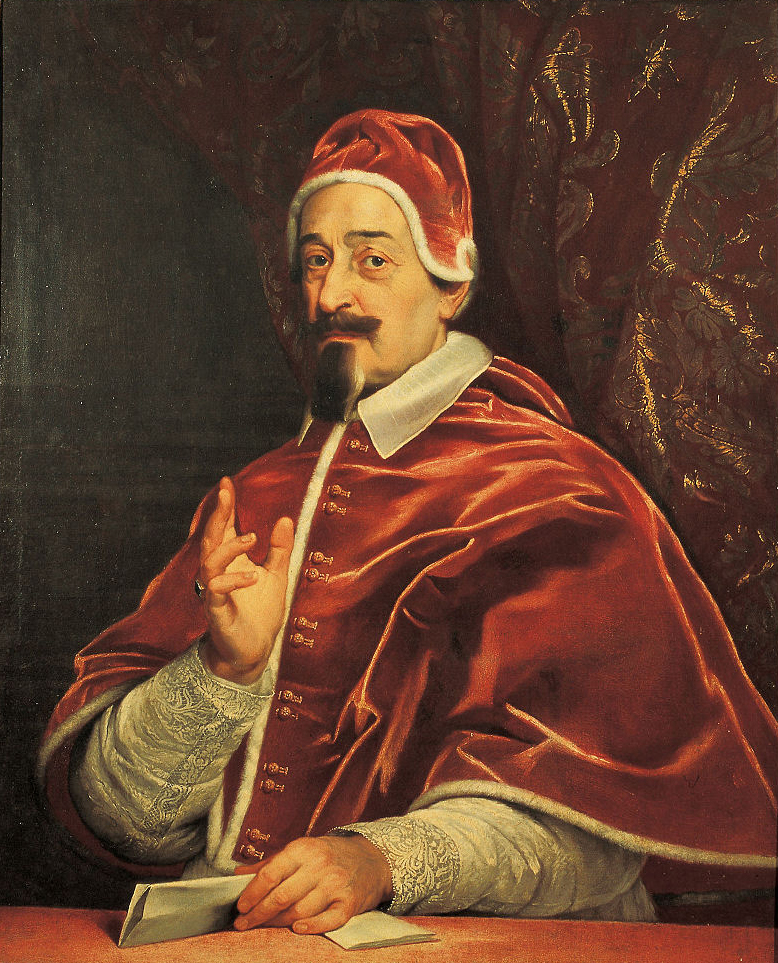
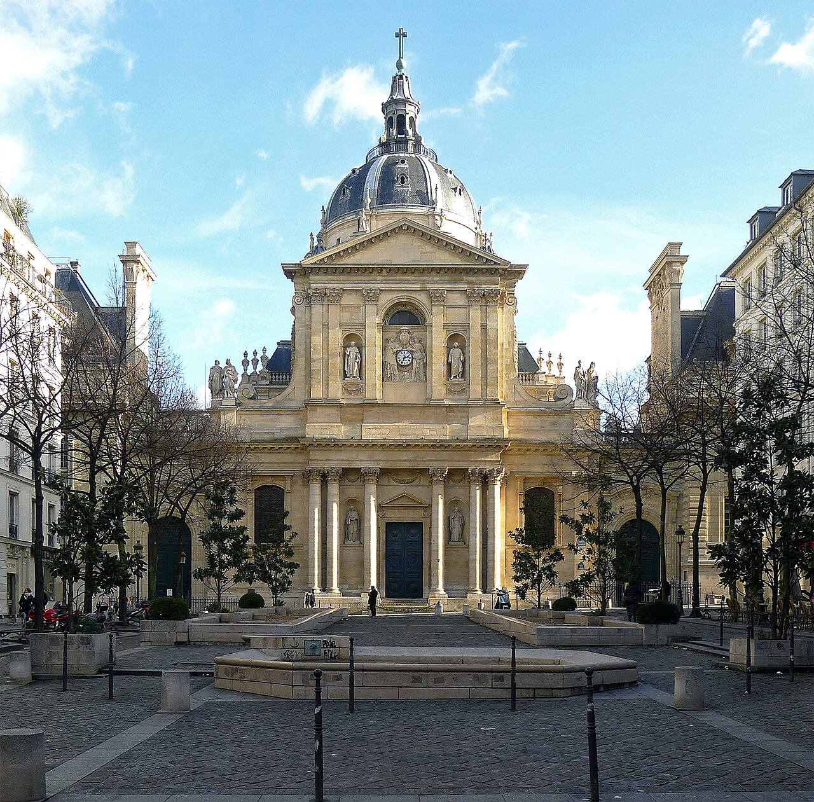

Cette nuit d'énigmes. Nicolas Cornet
Introduction
Parmi les didx Oraisons funèbres conservées de Bossuet, celle de Nicolas Cornet occupe une place singulière, que le canon constitué autour des six grandes oraisons de cour a longtemps contribué à rendre presque invisible. Rien ici de l’immense théâtre monarchique qui enveloppe Henriette-Marie, Henriette-Anne ou Marie-Thérèse ; point de récit militaire comparable à l’épopée de Condé ; point même de scène de mort pathétique. Le défunt est un docteur de Sorbonne : il fut syndic de la Faculté de théologie, c’est-à-dire qu’il fut l’officier chargé de défendre les intérêts de l’institution, de veiller à l’orthodoxie des doctrines doctrinales et de diriger les assemblées. Il fut également grand maître du collège de Navarre (situé rue de la Montagne-Sainte-Geneviève, à l’emplacement de l’ancienne Ecole polytechnique, en contrebas de l’église Saint-Etienne du Mont). La cérémonie a lieu le 27 juin 1663 dans la chapelle même du collège, un peu plus de deux mois après la mort de Cornet. Bossuet parle donc dans une institution qui fut la sienne, devant un public auquel la mémoire de Cornet appartient directement, et d’un homme qui fut personnellement son maître. La singularité de cette situation est d’autant plus remarquable qu’elle conduit l’oraison funèbre à faire de la science théologique, du discernement doctrinal, de l’autorité universitaire et du gouvernement des consciences les équivalents chrétiens des grandes actions politiques et militaires louées ailleurs : aux yeux de Bossuet, si Cornet ne fut pas un grand de chair, il régna dans l’ordre de l’esprit, eût dit Pascal.
La présente oraison constitue une sorte de diptyque non initialement prévue avec celle de Bourgoing, prononcée aussi, on l’a vu, au plus fort de la crise « janséniste ».
Bosssuet n’eut jamais l’intention de publier ce texte. La première édition connue parut en 1698, à Amsterdam, sans l’aval de l’auteur : c’est Charles-François Cornet de Coupel, petit-neveu du défunt, qui prépara le texte. Ledieu rapporte même que Bossuet, découvrant cette publication, déclara ne s’y reconnaître « pas du tout ». Jacques Truchet refuse pourtant avec raison de rejeter le texte : le compte rendu contemporain du janséniste Godefroi Hermant confirme l’orientation générale du discours, notamment son développement contre les disciples de Jansénius. La macrostructure, les grands mouvements argumentatifs et les prises de position semblent bien refléter la teneur des propos de Bossuet ; la microanalyse appellerait davantage de prudence.
Cette réserve est particulièrement importante ici parce que l’oraison intervient dans une histoire extrêmement conflictuelle. Nicolas Cornet est l’un des acteurs décisifs de la genèse de l’affaire des sept propositions dénoncées en 1649, dont les cinq premières seront ensuite soumises à Rome et condamnées en 1653 par la bulle Cum occasione. Je ne vais pas relater ici l’affaire des cinq propositions : je me contente de renvoyer une nouvelle fois au site que j’ai consacré à Port-Royal à l’université de Rouen.
Je me borne à souligner quelques points essentiels :
les propositions ne furent pas « inventées » par Cornet puisqu’elles apparaissaient dans des thèses soumises à la Faculté ;
… mais elles n’étaient pas davantage des citations littérales de l’Augustinus, et cette décision de reformuler plutôt que de citer eut des conséquences que Cornet n’avait sans doute pas imaginées : cette imprécision causa des décennies de polémiques, l’enjeu étant de savoir si les propositions se trouvaient, ou non, dans Jansénius, et le cas échéant si elles étaient utilisées en un sens hérétique – c’est la fameuse distinction d’Arnauld du droit (les propositions sont hérétiques) et du fait (elles ne sont pas dans Jansénius). (( (( Grès-Gayer, s’appuyant notamment sur Lucien Ceyssens, établit deux faits qui doivent être tenus ensemble : Cornet ne les inventa pas de toutes pièces, puisqu’elles apparaissaient dans des thèses de candidats ; mais elles ne furent pas non plus directement « extraites » de l’Augustinus. Ajoutons pour l’anecdote : les spécialistes continuent de se déchirer aujourd’hui sur cette question, provoquant moins de remous toutefois qu’il y a trois siècles. )).
Jacques M. Grès-Gayer insiste sur ce double constat et rappelle en même temps l’échec de la Faculté à trouver une procédure unanimement acceptée. Les cinq premières propositions furent finalement portées à Rome par des évêques français, et la réception de Cum occasione à Paris fut elle-même étroitement encadrée par la monarchie.
Cette histoire n’est pas un simple arrière-plan. Elle constitue une partie de la matière même de l’oraison. Mais le travail littéraire consiste précisément à ne pas réduire le texte à son dossier doctrinal. Le problème est de comprendre ce que Bossuet fait de cette histoire lorsqu’il la fait entrer dans un éloge funèbre. À cet égard, les recherches de Christian Jouhaud fournissent un aiguillon méthodologique précieux, sans qu’il s’agisse évidemment de lui attribuer une lecture de Bossuet qu’il n’a pas menée. Les Pouvoirs de la littérature invite à considérer l’écriture et l’éloquence comme des pratiques prises dans des situations de service, des institutions, des rapports de pouvoir et des entreprises de persuasion : les choix politiques sont alors aussi des choix d’écriture, et réciproquement ; un discours ne représente pas seulement une situation de pouvoir, il peut agir en elle. Cette approche convient particulièrement à un sermon prononcé au cœur du collège de Navarre, par un ancien élève, en mémoire d’un ancien grand maître, devant des théologiens dont certains ont directement vécu les controverses évoquées, et alors que la crise bat son plein. L’oraison n’est pas seulement le souvenir d’une action passée : elle est elle-même une action présente de mémoire, d’autorisation et de tentative de pacification.
Il faut toutefois tenir ensemble cette perspective politique et les exigences propres de l’éloquence sacrée. Bossuet n’est ni un historiographe officiel, ni un polémiste composant un libelle contre Port-Royal. Il prononce une oraison funèbre : il doit louer un mort sans sacrifier à la vanité de l’éloge ; instruire des vivants ; convertir la mémoire en exemplum ; faire entendre l’Écriture ; conduire ultimement les auditeurs vers leur propre salut.
L’oraison de Cornet condense toutes ces difficultés dans le texte scripturaire qui l’ouvre : le royaume des cieux est semblable à un « trésor caché ». Toute la composition procède de ce paradoxe. Comment publier une grandeur qui s’est voulue secrète ? Comment faire d’un homme qui refuse les dignités une autorité publique ? Comment transformer la participation effective de ce docteur à une crise déchirant l’Église en preuve de modération et en instrument d’unité ? Comment enfin maintenir le caractère chrétien de l’éloge lorsque celui-ci prend en charge des enjeux aussi lourds de doctrine, de juridiction et de querelles intestines déchirant la Faculté de théologie de Paris, alors l’une des plus importantes au monde ?
Il faudra d’abord comprendre comment l’oraison invente une forme de grandeur paradoxale, adéquate à un défunt qui récuse précisément les signes ordinaires de la grandeur.
On verra ensuite que cette grandeur se définit essentiellement comme puissance de discernement : à travers la recherche du « milieu », la glorification de la Sorbonne et l’accord de la doctrine avec la vie, Bossuet accorde à Cornet une autorité de jugement.
Il faudra enfin examiner l’épreuve décisive de cette autorité : l’affaire des propositions, dont l’oraison recompose l’histoire afin de convertir la tempête polémique en mémoire de l’ordre et en désir de paix, avant de rendre Cornet aux vivants comme modèle de conduite et à Dieu comme âme encore offerte aux approbations de l’Église.


I. « Trésor public et trésor caché » : Cornet, lumière de l’ombre
Tout le texte développe une parabole du Christ, dont Bossuet ne donne que le début du verset (Matthieu, 13, 44)
« Simile est regnum caelorum thesauro abscondito in agro, quem qui invenit homo abscondit, et prae gaudio illius vadit, et vendit universa quae habet, et emit agrum illum. » « Le royaume des cieux est semblable à un trésor caché dans un champ, qu’un homme trouve, et qu’il cache ; et dans la joie qu’il en ressent, il va vendre tout ce qu’il a, et achète ce champ. »
C’est une théologie du Dieu caché et une poétique du visible et de l’invisible que Bossuet déploie dès le début de l’oraison, à la faveur de cette amorce.
A. Une poétique du visible et de l’invisible
La première difficulté de Bossuet tient au statut même de son objet. Cornet n’est pas l’un de ces grands dont la naissance, la puissance ou les emplois publics semblent d’avance appeler le monument funèbre. Bossuet part précisément de cette disproportion apparente pour redéfinir la dignité encomiastique. L’exorde énonce un paradoxe au cœur de l’oraison :
« Avoir mérité les dignités et les avoir refusées, c’est une nouvelle espèce de dignité qui mérite d’être célébrée par toutes sortes d’honneurs ; et comme l’univers n’a rien de plus grand que les grands hommes modestes, c’est principalement en leur faveur, et pour conserver leurs vertus, qu’il faut épuiser toutes sortes de louanges » (p. 77).
La formule inscrit d’abord Cornet dans un très ancien topos de l’autorité réticente. De Cincinnatus rappelé à sa charrue 1 aux évêques qui fuient l’épiscopat 2, la tradition civile puis chrétienne fait volontiers du refus de la charge la meilleure preuve qu’on mérite de l’exercer : celui qui ne recherche pas le pouvoir paraît précisément digne qu’on le lui confie. Bossuet radicalise pourtant le motif, puisque Cornet ne se contente pas d’une recusatio rituelle bientôt vaincue par l’obéissance. « On a recherché son humilité ; mais il n’y a pas eu moyen de la vaincre » ; « nos rois » ont voulu reconnaître son mérite, « mais on n’a pu le résoudre à recevoir d’une main mortelle, quoique royale » ; les deux cardinaux lui offrent des avantages, la reine mère lui propose une prélature, et il refuse encore (p. 91-92). 3. Bossuet conduit le refus jusqu’à la limite spectaculaire de la désobéissance, lorsque l’humilité est telle qu’elle résiste même au désir du souverain. Bossuet peut alors opposer ce modèle à la « jeunesse emportée » qui « brigue la faveur des princes » (p. 92) : le vieux topos devient une machine polémique contre l’ambition ecclésiastique, tout en séparant chez Cornet la très grande autorité de l’ambition personnelle et du goût des « dignités » envisagées idolatriquement, pour elles-mêmes et non en vue du bien qu’elles peuvent permettre de faire.
Mais cette représentation du « trésor caché » entre en tension manifeste avec la réalité de la carrière de Cornet. Celui-ci n’a certes pas reçu la prélature ni les dignités éclatantes que Bossuet énumère ; il n’a pourtant rien d’un obscur. Grand maître du collège de Navarre, syndic de la Faculté, consultant recherché, détenteur d’une « autorité vénérable » (p. 85), il intervient dans les conseils et les délibérations et pèse directement sur les controverses de son temps. Surtout, l’histoire religieuse du XVIIe siècle conserve son nom pour une raison très précise : Cornet est l’initiateur de la procédure de 1649 sur les sept propositions, dont les cinq premières deviendront les célèbres « cinq propositions » condamnées à Rome. Il est donc paradoxalement l’un de ces hommes sur lesquels les biographies restent assez pauvres mais dont le nom demeure inévitable dès qu’on raconte la crise « janséniste ». Le nœud de cette tension réside dans une certaine conception de l’humilité par Bossuet, qui distingue l’autorité exercée et dignité possédée.
Le « caché » ne désigne donc pas une obscurité sociale ou historique, mais le principe intérieur censé gouverner une carrière très publique : désintéressement, humilité, soumission au devoir. La stratégie de Bossuet consiste à dédouaner Cornet de tout goût pour la polémique, la controverse, l’intrigue ou l’intérêt : il a dû agir « malgré lui », bien qu’il fût « modeste et pacifique », pour une raison évangélique « un docteur ne peut pas se taire dans la cause de la foi » (p. 86). C’est une loi dictée par le Christ : lorsque la vérité est en jeu, nul n’a le droit de garder le silence (Lc, 19, 40).
L’initiative historique de 1649 est ainsi requalifiée par l’oraison : Cornet n’a pas voulu imposer son parti dans une assemblée divisée, c’est son devoir qui l’a poussé à agir alors qu’il aurait préféré demeuré dans le retrait, comme le prouve la suite de sa carrière. La modestie de Cornet, l’humilité de sa tombe près de la porte du collège possèdent en réalité une valeur probatoire : la simplicité de Cornet prouve qu’il n’a pu agir par intérêt politique ou personnel en 1649. Le vieux scénario de l’autorité réticente acquiert dès lors une efficacité institutionnelle très précise : il ne diminue pas le pouvoir de Cornet, il ledésintéresse ; et plus son rôle réel dans la crise apparaît considérable, plus il importe à l’économie de l’éloge de montrer qu’il n’en recherchait ni l’éclat ni les profits.
— La transvaluation (chrétienne) de toutes les valeurs
L’Oraison funèbre de Nicolas Cornet participe ici d’un renversement chrétien des hiérarchies de valeur.
Aux yeux du monde, la grandeur se mesure aux charges, aux titres, aux dignités, aux honneurs reçus, à l’éclat public ;
Cornet au contraire illustre une « nouvelle dignité », dont le propre est d’être invisible : le « trésor caché ».
Un tel paradoxe est profondément évangélique : celui qui refuse de s’élever se trouve précisément élevé par son refus. Sans que soient cités Matthieu 20, 16 (« les derniers seront les premiers ») ou Paul (« Quod stultum est Dei, sapientius est hominibus ; et quod infirmum est Dei, fortius est hominibus », « Ce qui est folie en Dieu est plus sage que les hommes ; et ce qui est faiblesse en Dieu est plus fort que les hommes. », 1 Co 1, 25), cette logique d’inversion, au cœur du christianisme, travaille tout le passage ; elle sera explicitée plus loin par le verset de Luc 14, 11 : « Qui se humiliat, exaltabitur », « celui qui s’humilie sera exalté » (p. 93).
L’éloge chrétien ne supprime pas la grandeur, ne nivelle pas, n’égalise pas en proclamant seulement le néant de toutes les créatures devant la face de Dieu : il va bien plus loin, il retourne. Et c’est ici que la mort est défaite : œuvre du mal, elle est bien contrainte de dévoiler la vérité qu’elle voulait détruire. La mort possède, si l’on veut, une fonctionapocalyptique de révélation4 .
— « La nuit d’énigmes » (p. 87). Une poétique du Dieu caché
Le paradoxe du « trésor caché » est dès lors inséparable d’une véritable poétique du visible et de l’invisible. Bossuet affirme qu’il va donner à voir : « Vous verrez donc Nicolas Cornet, trésor public et trésor caché ; plein de lumières célestes et couvert autant qu’il a pu de nuages épais, illuminant l’Église par sa doctrine » (p. 79). Mais la lumière est concurrencée par les nuages : le paradoxe du « trésor caché » repose sur une théologie du Dieu caché5. Dieu ne se donne pas dans une évidence qui contraindrait l’assentiment : depuis la Chute, l’être humain n’habite plus un monde où la création mènerait de façon transparente à son Créateur. Désormais, la raison humaine est blessée, impuissante à voir le vrai, ses passions troublent son jugement, ses sens eux-mêmes ne suffisent pas à déchiffrer ni, littéralement, à « voir » ce qu’ils rencontrent. Mais cette obscurité du Dieu caché n’équivaut nullement à une disparition ou un éloignement de Dieu qui se serait rendu inaccessible, comme le pensait à tort Lucien Goldmann 6 . C’est tout le paradoxe du Deus absconditus : Dieu n’est pas introuvable, il se cache (« Dieu s’est voulu caché », Pascal, Pensées, fr. Sellier 275) c’est-à-dire en réalité qu’il se cache à demi parce que c’est la seule façon pour lui de se révéler à nous. La dissimulation est positive : nous sommes devenus trop faibles, à cause du péché, pour supporter la vision de Dieu ; pour notre bien, Dieu s’est donc voilé, afin que nous le percevions comme à travers un gaze ou un verre translucide. Pascal construit volontiers cette économie en termes de signes ambigus : il y a assez de lumière pour ceux qui désirent voir et assez d’obscurité pour ceux qui ne le désirent pas. L’ambiguïté du monde devient ainsi une épreuve de la disposition intérieure du sujet. Dieu, pour se faire trouver, a dû se cacher dans les signes, les traces, les figures de rhétorique, ou la poésie — autant d’ombres et de nuages qui sont autant de médiations indispensables pour que la faiblesse humaine puisse entrevoir la réalité divine. Dieu, dit Pascal, a « tempéré sa connaissance » par pure bienveillance, de sorte qu’ « il y a assez de lumière pour ceux qui ne désirent que de voir et assez d’obscurité pour ceux qui ont une disposition contraire » (Pascal, Pensées, fr. Sellier 274). Le poète Lemaistre de Sacy parle encore plus nettement de ce « Dieu voilé pour mon bien de ces ombres sensibles ». C’est par miséricorde et non pour nous châtier que Dieu sa cache : Felix culpa ! Heureuse faute que celle d’Adam, sans laquelle la littérature, les arts, la poésie n’eussent pas existé ! 7
Bossuet inscrit l’oraison funèbre dans cette même filiation scripturaire et patristique du « Dieu caché », qui n’est pas du tout propre à Pascal, Racine et Port-Royal, et selon laquelle la vérité ne se donne à voir qu’à travers des signes, des figures, des traces, que le regard de foi doit apprendre à lire. Le « trésor caché » vaut d’abord comme schème scripturaire et ecclésiologique. Les vraies grandeurs sont cachées sans être invisibles, c’est-à-dire qu’elles sont présentes sous une forme qui demande interprétation. Une destinée, une conversion, une chute politique, une mort deviennent lisibles comme figures d’une vérité qui les dépasse. Le monde et l’histoire ne sont donc ni transparents ni muets. Le libertin peut n’y voir que succession d’accidents, puissance, carrière, catastrophe ; le regard chrétien, éclairé par l’Écriture et la grâce, y discerne une autre profondeur, mais cette profondeur demeure elle-même sous le régime du signe : quoi qu’on fasse, ici-bas, nous ne voyons jamais que des reflets imparfaits, comme si nous regardions le monde à travers le verre dépoli d’un antique miroir de métal : « Videmus nuncper speculum in aenigmate: tunc autem facie ad faciem. « Nous voyons maintenant dans un miroir, en énigme ; alors nous verrons face à face. », 1 Co 13, 12.).
Lumière et nuages : comme Dieu se manifeste sans abolir son retrait, la vertu chrétienne agit sans se donner immédiatement en spectacle. Elle produit des effets dont le principe véritable demeure intérieur et invisible. Dès lors, le prédicateur assume une fonction pleinement herméneutique : il enseigne à voir, à déchiffrer les signes, à retrouver la présence du Dieu caché dans la vie du Grand Maître humble et retiré. L’oraison funèbre change le régime de visibilité : la mort est l’occasion de « produire au grand jour » les vraies vertus et, derrière ce que le monde juge faiblesse, de découvrir cette logique de la Croix où « quod stultum est Dei, sapientius est hominibus ; et quod infirmum est Dei, fortius est hominibus » (1 Co 1, 25). L’oraison funèbre est une pédagogie du regard chrétien.
Les jansénistes oublient ce principe lorsque, plein d’imprudence et d’indiscrétion, ils veulent percer tous les secrets de la vérité : ils oublient que nous sommes ici-bas condamnés au « clair-obscur du monde », selon la formule de Philippe Sellier 8 ; ils ne veulent se « contenter simplement des lumières qui nous sont données plutôt pour réprimer notre curiosité, que pour éclaircir tout à fait le fond des choses » : comme Pascal, Bossuet considère que nous évoluons dans un demi-jour crépusculaire, mais ce quinquet où nous sommes réduits est, ici encore, bienfaisant et même thérapeutique, il doit nous aider à contenter notre besoin de savoir ; il nous faut nous en contenter sans chercher l’éclat d’une Vérité qui n’est pas à notre portée, que nous ne supporterions pas et qui n’est pas pour nous dans ce monde, « cette nuit d’énigmes et d’obscurités » (p. 87) ou l’on reconnaît bien sûr l’aenigmate paulinien – le clair-obscur du monde.


La fin du discours confirme cette logique lorsqu’elle lorsqu’elle réconcilie enfin secret et exemplarité : Cornet, dit Bossuet, savait à la fois que le chrétien doit être « lumière » et que sa vie doit demeurer « cachée » ; aussi « il fut humble et exemplaire », faisant « quelques petites aumônes en public pour édifier le prochain » et de beaucoup plus grandes « en particulier » (p. 94). Ce petit détail, inspiré une fois encore d’une scène évangélique 9 résume presque toute l’oraison, et la théologie du Dieu caché : à l’image du Très-Haut, le chrétien ne doit ni exhiber sa vertu, ni la rendre absolument invisible, puisqu’elle doit aussi édifier. Mais après sa mort, la vertu peut éclaterfacie ad faciem. La mort reçoit dès lors une fonction très singulière : elle est d’abord ici une levée de l’interdit encomiastique : « elle ne peut pas négliger le seul avantage qui lui revient de sa mort, qui est la liberté de le louer » (p. 78). Elle permet d’accéder au temps de la vérité : le temps de l’énigme est terminé pour Cornet, l’oraison funèbre nous fait entrevoir déjà le face-à-face divin.
— L’irruption du « moi »
Cette dimension éclaire aussi la place singulière de la première personne. Le « je » oratoire n’a rien d’exceptionnel dans la chaire : le prédicateur dit « je vous montrerai », « je veux », « je vois », « je vous conjure », etc. Il organise son discours, manifeste son ministère, parfois son émotion. Ce qui est beaucoup plus inhabituel ici, c’est l’emploi du « je » autobiographique. Bossuet sent assez la difficulté pour entourer l’intervention d’une précaution : « si toutefois vous me permettez de dire un mot de moi-même » (p. 78). La parenthèse signale elle-même un écart de convenance : parler de soi demande autorisation. Et l’insistance qui suit (« Et moi… moi, dis-je ») rend d’autant plus sensible cette brusque apparition de la personne privée derrière le ministre de la chaire.
Mais précisément, cette irruption du moi n’est pas une confidence au sens moderne. Bossuet ne nous livre pas son intériorité : il produit un témoignage. On pourrait employer ici, avec prudence, le vieux terme d’autopsia, terme judiciaire renvoyant à une connaissance acquise pour avoir soi-même vu, fréquenté, éprouvé ce dont on témoigne. Le mouvement est d’ailleurs préparé par la phrase immédiatement précédente : Navarre peut désormais « annoncer hautement ce qu’elle a connu de si près » (p. 78) ; puis le corps collectif s’efface devant celui qui peut revendiquer une proximité plus étroite encore avec Cornet. Les vertus de Cornet sont par définition difficiles à établir puisqu’elles sont « cachées » par sa modestie ; leur vérité ne peut être garantie seulement par la renommée publique, qui précisément ne les a pas pleinement aperçues. Il faut quelqu’un qui ait eu accès au proche, au particulier, presque au privé. Le je intervient à cet endroit comme une instance de véridiction. Bossuet engage sa personne comme pièce à conviction : l’homme qui parle devant l’assemblée est lui-même l’un des effets observables de l’action de Cornet. « Puis-je lui refuser quelques fruits d’un esprit qu’il a cultivé… ? » (p. 78) : le mot de « fruits » transforme l’éloquence présente de Bossuet en preuve de l’efficacité passée du maître. Celui qui produit l’éloge est en même temps un produit de celui qu’il loue.
C’est là que le jeu avec l’éloquence de la chaire devient particulièrement subtil. Comme l’explique Anne Régent-Susini, le prédicateur doit normalement se déprendre de sa personne pour parler comme ministre d’une parole qui le dépasse. Ici pourtant, Bossuet doit momentanément faire apparaître l’individu derrière le ministre, parce que la vérité particulière qu’il veut établir exige un témoin particulier. Mais cette personnalisation se neutralise aussitôt : il parle de lui pour reporter sur Cornet ce qu’il pourrait revendiquer comme sien. L’esprit de Bossuet ? C’est Cornet qui l’a « cultivé ». L’éloquence de Bossuet ? Il la doit à Cornet qui en fut « le censeur et l’arbitre ». Même le geste apparemment le plus personnel devient donc un geste de dépossession, et échappe à ce qui constitue pour Augustin la racine même du mal, l’amour de soi (amor sui).
B. « Sortez de ce tombeau » : la voix du Christ
— La puissance du Verbe
Sortez, grand homme, de ce tombeau ; aussi bien y êtes-vous descendu trop tôt pour nous : sortez, dis-je, de ce tombeau que vous avez choisi inutilement dans la place la plus obscure et la plus négligée de cette nef. (p. 78-79)
Cette apostrophe surprenante constitue comme une mise en abyme de la poétique de l’oraison funèbre. Un faisceau d’éléments concourt à la densité de ce passage : conjuration du mort, pouvoir thaumaturgique de la parole, résurrection, humilité, et théologie du visible.
La violence de l’injonction se justifie par la référence aux Évangiles : on entend rien moins que l’appel du Christ à Lazare, Lazare, veni foras, « Lazare, viens dehors » (Jn 11, 43). Comme il venait de le promettre à l’assistance, l’orateur entreprend de restituer le mort aux communautés qui l’ont perdu. L’oraison ne sera pas un simple récit mais, à défaut d’une résurrection, du moins une hypotypose qui fera reparaître le défunt devant ceux qui l’écoutent.
Le parallèle avec Lazare est bien sûr analogique, mais le souvenir évangélique souligne la puissance performative de la parole du prédicateur, qui garde quelque chose de la puissance démiurgique du Verbe. On constate une fois de plus que c’est en se dépossédant de sa parole que celle-ci acquiert le plus de force, « d’autorité » jusqu’à assumer une part de la puissance de vie de la seconde personne divine. Dans le Sermon sur la mort, déjà, Bossuet conduisait ses auditeurs jusqu’au tombeau de Lazare et rappelait que les morts entendront un jour la parole du Christ et ressusciteront.
Accourez donc, ô mortels, et voyez dans le tombeau du Lazare ce que c’est que l’humanité : venez voir dans un même objet la fin de vos desseins et le commencement de vos espérances ; venez voir tout ensemble la dissolution et le renouvellement de votre être ; venez voir le triomphe de la vie dans la victoire de la mort.


Dans l’oraison de Cornet, l’éloquence accomplit une résurrection beaucoup plus modeste mais immédiatement visible : elle ne restitue pas le corps de Cornet, mais elle ressuscite sa présence, sa mémoire et son exemple. La voix du prédicateur tonnant « Sortez » anticipe la voix de Dieu qui fera se lever les morts de leur sépulcre, comme l’a promis saint Jean (« Venit hora in qua omnes qui in monumentis sunt, audient vocem Filii Dei », Jean, 5, 28) après Ezéchiel (« Ecce ego aperiam tumulos vestros, et educam vos de sepulchris vestris, populus meus, et inducam vos in terram Israël », Ezéchiel, 37, 12-13).
Comment Bossuet ose-t-il s’accaparer la parole de Jésus et sa puissance ? Une telle audace surprend une conscience moderne, mais elle est parfaitement légitime et rend possible l’éloquence de la chaire : le prédicateur est un prophète, il parle au nom de Dieu. Bossuet l’explique dans « Le Sermon sur la parole de Dieu » : « Le prédicateur évangélique, c’est celui qui fait parler Jésus-Christ »10,
Quelle est cette sagesse, Messieurs, qui doit parler dans les chaires, sinon Notre Seigneur Jésus-Christ qui est la Sagesse du Père, qu’il nous ordonne aujourd’hui d’entendre ? Ainsi le prédicateur évangélique, c’est celui qui fait parler Jésus-Christ. Mais il ne lui fait pas tenir un langage d’homme, il craint de donner un corps étranger à la vérité éternelle : c’est pourquoi il puise tout dans les Écritures, il en emprunte même les termes sacrés, non seulement pour fortifier, mais pour embellir son discours. 11 .
Bossuet cite le Christ (« qui vos audit me audit », « qui vous écoute m’écoute », Lc 10, 16) et déclare qu’il parle depuis « la chaire de Jésus-Christ, d’où nous faisons retentir sa voix et son Évangile » 12.
L’effet saisissant du « Sortez » est renforcé par une deixis oratoire : le prédicateur montre « la plus obscure et la plus négligée de cette nef ». Le démonstratif pointe le décor réel de la cérémonie et le transforme immédiatement en espace dramatique. C’est ce procédé qui donne au « Sortez » sa force quasi théâtrale, tout en tenant de de l’actiorhétorique : la parole ne vaut pas seulement par ce qu’elle signifie, mais par son inscription corporelle et spatiale. Cette humilité matérielle devient l’emblème d’une existence. Cornet était déjà, en quelque manière, enseveli avant de mourir : il avait choisi l’obscurité sociale comme il choisit maintenant l’obscurité funéraire. On entend ici encore un souvenir néotestamentaire, source du motif chrétien de la mort au monde et de la vie cachée : « mortui enim estis, et vita vestra est abscondita cum Christo in Deo », « vous êtes morts, et votre vie est cachée avec le Christ en Dieu » (Col 3, 3, mais voir aussi Col 3, 9-10). Bossuet n’a pas besoin de citer Paul devant un auditoire ecclésiastique qui connaît par cœur ce verset, au cœur de l’anthropologie chrétienne classique comme de cette oraison : il faut mourir à soi, mourir aux honneurs, et cacher sa vie pour vivre en Dieu d’une autre vie.
La formule « Votre modestie vous a trompé » tient de la pointe, par son inversion logique (la modestie devait garantir l’effacement), qui prépare déjà le « Qui se humiliat, exaltabitur » de la seconde partie (p. 93) : l’humilité se retourne en principe d’exaltation. Il en va de même « Noble obscurité » : l’ordre chrétien des valeurs renversent les hiérarchies humaines et justifie les paradoxes.
— La parabole de la lampe
Le désir de « produire au grand jour » la grâce de Cornet exige de la part de Bossuet une forme de violence (p. 79). Bossuet, et toute la communauté arrachent Cornet à sa cachette. Trahissent-ils la volonté dernière de Cornet ? Non. Cornet lui-même « savait que Jésus-Christ nous a recommandé d’être des lumières » (p. 93). Bossuet, loin de contrevenir aux vrais sentiments de Cornet, accomplit l’injonction que le Christ nous a laissé à travers la parabole de la lampe :
« Neque accendunt lucernam, et ponunt eam sub modio, sed super candelabrum, ut luceat omnibus qui in domo sunt. Sic luceat lux vestra coram hominibus, ut videant opera vestra bona, et glorificent Patrem vestrum qui in caelis est. « On n’allume pas une lampe pour la mettre sous le boisseau, mais sur le chandelier, afin qu’elle éclaire tous ceux qui sont dans la maison. Qu’ainsi votre lumière luise devant les hommes, afin qu’ils voient vos bonnes œuvres et glorifient votre Père qui est dans les cieux. » (Matthieu, 5, 15-16)
Sic luceat lux vestra coram hominibus : « produire au grand jour » l’« obscurité », révéler la grâce « caché[e] » ne sont pas des options : Bossuet accomplit un devoir évangélique, en accord avec le désir profond de Cornet.
Toute l’oraison est donc prise dans une contradiction : il faut révéler l’homme caché sans abolir la valeur de ce que Cornet a voulu cacher. Dès lors, une question se pose : comment la théologie du Dieu caché, du visible et de l’invisible, du Dieu « translucide » qui tempère ses clartés, s’accorde-t-elle avec cette dialectique complexe de la modestie admirable et de la lumière nécessaire ?
Il convient bien sûr de ne pas confondre les deux régimes : Dieu se cache parce qu’il ne se livre pas ici-bas dans l’évidence du facie ad faciem, tandis que le chrétien se cache par humilité. Mais dans les deux cas, le caché n’est jamais l’absent, il se manifeste sous voile. La lumière passe, mais la source ne se donne pas toute nue.
C’est là que la modestie de Cornet cesse d’être contraire à la nécessité de « luire ». Une lecture préciser de Matthieu 5 déjà cité confirme que la visibilité chrétienne est légitime à condition qu’elle traverse la personne sans s’arrêter à elle. Bossuet le formule de façon paradoxale : Cornet fut à la fois « humble et exemplaire ». C’est la parabole de la lampe qui, sous-jacente, expliquera de même, dans les oraisons adressées aux Grands, que Bossuet ne condamne pas en tant que tels les titres, les charges et les honneurs : une reine qui use de ses prérogatives pour « glorifier le Père » est légitime en tant que reine. Elle accomplit, comme Cornet, ce que François de Sales appellerait sa « vocation » ou son devoir d’état, différent de celui de Cornet, mais reposant sur le même principe donné par Matthieu 5, 15-16 13.
La dialectique du caché/montré repose encore une autre structure théologique, essentielle à l’Ecole française : l’Incarnation et la Croix. La divinité se manifeste sous l’humilité d’une chair, la puissance sous la faiblesse, la sagesse sous ce que le monde prend pour folie. La grandeur chrétienne est donc par nature paradoxale. Le saint véritable ressemble au Christ en ce que sa grandeur n’éclate pas aux yeux de chair : elle est d’un « autre ordre », « surnaturel », dirait Pascal (Pensées, fr. 339). La théologie du Dieu caché et la morale de l’humilité reposent sur une même économie de la manifestation : il faut assez de lumière pour que la créature soit menée jusqu’à Dieu, et assez de retrait pour que cette lumière ne soit pas captée par celui qui la transmet.
II. « Tenir la balance droite » (p. 84) : éloge du « discernement »
Important. Je ne réexplique pas ici qu’est le « jansénisme » et ce que sont les querelles sur la grâce : il faut en avoir une idée claire pour comprendre l’enjeu de cette oraison, mais je me contente de renvoyer au site de Rouen sur Port-Royal et d’abord à cette page. On se reportera aussi à l’article de Philippe Sellier sur cet autre site.
A. Les « deux maladies » de l’Église : une vérité en tension
– Encomiastique et polémique
Avant même de raconter l’affaire de la grâce, Bossuet consacre un long développement à deux dérèglements de la morale chrétienne. Il ne constitue pas, ou pas seulement, une digression à caractère polémique : il construit le modèle intellectuel qui permettra ensuite de lire les controverses doctrinales.
« Deux maladies dangereuses ont affligé en nos jours le corps de l’Eglise : il a pris à quelques docteurs une malheureuse et inhumaine complaisance, une pitié meurtrière […] Quelques autres, non moins extrêmes, ont tenu les consciences captives sous des rigueurs très-injustes : ils ne peuvent supporter aucune faiblesse, ils traînent toujours l’enfer après eux et ne fulminent que des anathèmes » (p. 80-81).
L’Église devient un corps malade ; les doctrines morales sont décrites par leurs effets pathologiques. À gauche, si l’on ose dire, une douceur qui tue : « pitié meurtrière », « coussins », « couvertures », flatterie des passions. À l’autre extrême, une violence qui enferme : consciences « captives », enfer traîné derrière soi, anathèmes fulminés. La peinture est fortement animée. Bossuet ne commence pas par discuter des propositions abstraites ; il donne à voir des conduites intellectuelles et pastorales. C’est l’un des points où l’oraison touche à cette poétique de l’éthopée que la prédication contemporaine affectionne : l’exposé moral devient tableau d’un type humain et d’un comportement : le relâché et l’austère. Arnaud Wydler a rappelé combien le sermon d’apparat privilégie ces représentations afin de rendre la doctrine immédiatement saisissable par le public ; la parole universelle doit emprunter des voies adaptées aux circonstances et aux auditeurs : c’est l’accommodation chère à Quintilien 14.
Le premier portrait possède en 1663 une résonance polémique. Bossuet ne prononce pas le nom des jésuites. Mais les « docteurs relâchés », les subtilités qui « réduisent tout l’Évangile en problèmes », les consultations infinies des « casuistes », les accommodements accordés aux passions renvoient très clairement au type du casuiste relâché dont les Provinciales ont imposé quelques années auparavant l’image publique. Pascal n’a certes pas inventé la polémique contre la morale relâchée : Saint-Cyran et Arnauld avaient déjà attaqué certaines pratiques morales et pénitentielles. Mais les Provinciales ont opéré un déplacement spectaculaire de la bataille. Parties du procès d’Arnauld (1655-1656) et des questions de grâce dans les quatre premières lettres, elles consacrent les lettres V à X à la casuistique et font du « relâchement » moral des jésuites un enjeu accessible à un public beaucoup plus large. Pascal va jusqu’à faire de cette morale l’effet d’une politique d’accommodement : pour « embrasser tout le monde », les jésuites auraient adapté les exigences chrétiennes aux passions des hommes. D’où un paradoxe assez savoureux, pour ne pas dire cocasse, dans l’oraison de Cornet : Bossuet, célébrant l’un des principaux adversaires du jansénisme, commence par adopter contre la morale relâchée une représentation que la polémique pascalienne vient précisément de populariser contre les jésuites.
Plus sérieusement, cette stratégie montre que le clivage n’oppose nullement, de manière simple, un camp jésuite à un camp janséniste qui serait d’emblée condamné. Non seulement Bossuet est très marqué par l’augustinisme, mais, sur le terrain moral, Bossuet partage largement l’exigence de réforme qui a fait la force desProvinciales. L’historiographie souligne d’ailleurs le contraste, caractéristique du catholicisme français de la seconde moitié du siècle, entre la marginalisation du jansénisme doctrinal et la victoire beaucoup plus large d’un rigorisme moral auquel Bossuet lui-même participe. Mais Bossuet refuse symétriquement que l’exigence de réforme se transforme en surenchère. Les « docteurs trop austères » commettent une erreur inverse : « ils ajoutent au joug que Dieu nous impose », transforment les conseils de perfection en obligations communes et font ainsi paraître « la vertu trop pesante, l’Évangile excessif, le christianisme impossible ». On peut ici parler, avec prudence, du pôle janséniste : non parce que Bossuet identifierait explicitement tous les rigoristes aux disciples de Jansénius, mais parce que la suite de l’oraison fera très nettement passer cette critique de l’excès moral à celle des « nouveaux docteurs » engagés dans la querelle augustinienne.
– « Eplucher de trop près » (p. 87). Une épistémologie des limites
La vertu apparaît ennemi des extrêmes, ici ; entre fermeté et dureté. L’erreur ne naît donc pas nécessairement d’un mauvais principe ; elle peut naître d’une vérité que l’on pousse trop loin. C’est pourquoi le mot décisif du passage est peut-être moins « milieu » que « tempérament ». Bossuet cite Chrysostome commentant le « joug doux » et le « fardeau léger » du Christ (« jugum meum suave est », Mt 11, 28-30) : le Christ « ni ne nous décharge ni ne nous accable » (p. 82) ; son autorité assujettit les esprits tandis que sa bonté « ménage nos forces ». Le juste milieu n’est donc nullement un compromis tiède entre laxisme et rigorisme, comme si la vérité se trouvait arithmétiquement à mi-chemin. Le milieu est une ligne de crête où il est difficile de se maintenir. Le relâché retranche à l’Évangile pour l’accommoder aux passions ; l’austère y ajoute quelque chose de lui-même. Les deux altèrent également la règle. Le premier mêle à « la pourpre royale » des « lambeaux de mondanité » ; le second est sommé : « n’y ajoutez rien de vous-mêmes ». La rectitude consiste à ne retrancher ni ajouter 15.
La continuité entre les deux moments d’attaque au sein de l’oraison, d’abord morale puis théologique, est donc profonde. Dans les deux cas, l’erreur consiste à ne pas savoir s’arrêter. Les jésuites sont oubliés par la suite, mais les jansénistes sont de « grands hommes, éloquents, hardis, décisifs, esprits forts et lumineux ; mais plus capables de pousser les choses à l’extrémité que de tenir le raisonnement sur le penchant » (p. 89). La faute est dynamique, presque cinétique : ils sont incapables de s’arrêter et de demeurer sur le « penchant » : c’est précisément l’image de la ligne de crête où ils ne savent pas rester, parce qu’ils sont « excessifs » et « insatiables » (p. 88).
Bossuet développe une morale de l’intelligence comme discernement : « la première partie d’un homme qui étudie les vérités saintes, c’est de savoir discerner les endroits où il est permis de s’étendre, et où il faut s’arrêter tout court, et se souvenir des bornes étroites dans lesquelles est resserrée notre intelligence » (p. 88). Il est beau de savoir, mais il est périlleux de vouloir tout savoir. Cette prétention « insatiable » procède de l’orgueil, et se résout en curiosité funeste, concupiscience pernicieuse qu’Augustin appelait libido sciendiet Bossuet, la « maladie de savoir » (p. 88)


C’est pourquoi la curiosité qui veut atteindre « la dernière évidence de la conviction » devient au contraire « la plus prochaine disposition à l’erreur » (p. 88) : le diable peut tirer d’un bien, le désir de comprendre, un mal.
La prudence de Cornet (et bien sûr de son disciple Bossuet) ne consiste dès lors pas seulement à choisir une position doctrinale : elle consiste à posséder un art de la limite. Ce refus de l’excès rejoint notre propos antérieur sur le Dieu caché. Dans la séquence théologique, le refus de l’excès vient précisément de ce que nous sommes dans une « nuit d’énigmes et d’obscurités » : Dieu ne nous a pas donné une lumière telle que tout puisse être poussé jusqu’à « la dernière évidence » 16 . La mesure morale et l’humilité épistémologique ont donc la même structure.
ne pas ajouter au joug du Christ ;
en théologie, ne pas tirer de la lumière révélée davantage qu’elle ne donne ;
en morale, accepter qu’il existe une juste limite à l’accommodement comme à la rigueur, à l’action comme à la connaissance.
— « Le consensus des Pères »
Tel est le tort des jansénistes : ils ne se trompent pas lorsqu’ils considèrent Augustin comme le plus grand des pères. Cornet aussi (et Bossuet bien sûr) admirent et vénèrent l’évêque d’Hippone, docteur de la grâce : « Il vit donc que saint Augustin, qu’il tenait le plus éclairé et le plus profond de tous les docteurs, avait exposé à l’Eglise une doctrine toute sainte et apostolique touchant la grâce chrétienne » (p. 90). Bossuet n’abandonne donc pas Augustin aux adversaires qu’il combat, mais leur refuse de s’attribuer le monopole de l’interprétation d’Augustin, dont il font l’alpha et l’omega de la Tradition.
La faute des jansénistes (faute morale autant qu’intellectuelle) consiste en réalité à vouloir pousser Augustin au-delà des limites et tirer les dernières conséquences de ses thèses. Effectivement, les gens de Port-Royal tendaient à amputer l’œuvre d’Augustin de ses textes de jeunesse pour ne considérer que les derniers traités, très anti-humanistes, datant de la controverse contre Pélage, comme le De Correptione et gratia. L’équilibre et l’équité veulent au contraire qu’on prenne en compte non le seul Augustin, encore moins quelques traités polémiques du vieil Augustin, quelque vénérable qu’il soit, mais le consensus des Pères, « consensus patrum », c’est-à-dire l’accord moral et quasi universel des Pères de l’Église sur tel ou tel point de doctrine ou d’interprétation des Écritures. Les Pères, en effet, écrivent sous l’inspiration de l’Esprit : donc, pris dans leur ensemble, ils ne sauraient errer. « Pris dans leur ensemble » est essentiel : l’erreur consiste justement à sélectionner une phrase ou un auteur et à les tenir pour « la Tradition » tout entière, comme le font justement les jansénistes. La notion de consensus des pères a été formalisée par Vincent de Lérins dans son Commonitorium (434) : Aucun Père pris isolément, même très prestigieux, n’est à lui seul la Tradition. Ce qui fait autorité est le témoignage concordant des Pères, en tant qu’ils expriment la foi reçue et transmise par l’Église. Cela n’implique pas que les Pères aient toujours dit exactement la même chose : leurs œuvres comportent des divergences, des tâtonnements, des formulations historiquement situées. Mais lorsqu’ils convergent sur un point de foi, cette convergence possède une autorité bien supérieure à celle d’une citation particulière détachée de son contexte. L’hérésie est, étymologiquement, un « choix », alors que la Tradition est un tout organique. Or, ce qui caractérise les jansénistes, c’est justement leur originalité et leur nouveauté : « tous les théologiens avaient toujours regardé comme des inconvénients fâcheux » (la négation de la liberté humaine), sauf eux, « ceux-ci les regardaient comme des fruits nécessaires » (p. 87). « Tous » et « toujours » s’opposent à « ceux-ci » et « nouveaux docteurs » : les jansénistes ont brisé le consensus Patrum.
Truchet, dans La Prédication de Bossuet, note au contraire que la méthode théologique de Bossuet consiste moins à opposer les autorités qu’à « rassembler » et unifier ce qui constitue la pensée « catholique », c’est-à-dire universelle : il cite de nombreux pères, nous l’avons déjà observé. Dire avec Augustin la toute-puissance et la priorité de la grâce est catholique ; en tirer une conséquence qui ruinerait réellement la liberté humaine ne l’est plus, parce qu’on aurait conservé un élément du dépôt au prix d’un autre : la vérité est au « milieu », sans être molle.
– « Ne trouverez-vous jamais la médiocrité ? » (p. 81) : l’orthodoxie comme juste milieu
Cet éloge de la « médiocrité » et du juste milieu n’a rien de trivial ou de pauvre. La tradition chrétienne a elle-même explicitement raccordé le modèle aristotélicien du juste milieu à la définition de l’orthodoxie entre des erreurs contraires. Grégoire de Nazianze, Boèce puis Thomas d’Aquin fournissent presque la généalogie conceptuelle dont nous avons besoin pour Bossuet.
Chez Aristote, d’abord, la vertu morale est une mesotès, un milieu entre l’excès et le défaut 17. Ce milieu n’est pas une moyenne arithmétique de compromis : la vertu est un milieu quant à sa définition, mais un extrême quant à l’excellence. On retrouve dans l’oraison de Cornet cette conception : les uns sont trop doux : leur douceur devient « lâcheté ». Les autres sont trop fermes : leur fermeté devient dureté. Le mot de « médiocrité » doit évidemment être entendu dans ce vieux sens horatien : un milieu de vertu où « la justice, la vérité, la droite raison a posé son trône ». Et le commentaire de Chrysostome introduit le terme presque technique de « tempérament » : le Christ « ni ne nous décharge ni ne nous accable » (p. 82). Nous sommes très près de l’économie aristotélicienne de l’excès, du défaut et de la juste mesure.
Mais le plus intéressant est que le christianisme avait depuis longtemps converti ce schème moral en schème doctrinal. Le cas des controverses trinitaires est particulièrement spectaculaire. Contre Sabellius, il faut maintenir la distinction des personnes ; contre Arius, maintenir l’unité divine. Or Grégoire de Nazianze formule lui-même la solution exactement comme une voie entre deux extrêmes : dans son Discours 42, il refuse à la fois de sacrifier la Trinité à l’Unité et l’Unité à la Trinité, puis invite à marcher par la « voie royale » située entre les deux extrêmes, qu’il appelle le lieu des vertus
Αὐτοὶ δὲ τὴν μέσην βαδίζοντες καὶ βασιλικὴν, ἐν ᾧ καὶ τὸ τῶν ἀρετῶν ἕστηκεν, ὡς δοκεῖ τοῖς ταῦτα δεινοῖς, πιστεύομεν εἰς Πατέρα, καὶ Υἱὸν, καὶ Πνεῦμα ἅγιον, ὁμοούσιά τε καὶ ὁμόδοξα
Mais nous, marchant sur la voie royale qui se situe entre les deux extrêmes, qui est , selon les autorités, le siège des vertus, nous croyons au Père, au Fils et au Saint-Esprit, d’une seule Substance et d’ une seule gloire 18
Grégoire combine dans la même phrase l’imaginaire biblique de la voie qui ne dévie ni à droite ni à gauche, la théorie éthique du milieu, et la méthode de définition du dogme. La définition orthodoxe procède par double refus. Plus tard, Boèce théorise la parenté entre orthodoxie et éthique des vertus dans le Contra Eutychen et Nestorium, puis Thomas d’Aquin lui donne un formalisme scolastique dans la Somme théologique19.
Bossuet s’inscrit ici dans une importante filiation patristique et scolastique (« la doctrine de saint Augustin et de l’école de saint Thomas », p. 90). Il ne s’agit pas de soutenir que la controverse produit la vérité : pour Bossuet comme pour Augustin, la vérité est antérieure et éternelle. Mais c’est à l’occasion des disputes que l’Église se trouve contrainte d’expliciter sa doctrine. Le prédicateur se souvient de ce qu’écrivait l’auteur de La Cité de Dieu à propos des hérésies : après avoir repris le Oportet et haereses esse paulinien 20, le docteur de la grâce explique que bien des vérités de la foi catholique, lorsqu’elles sont agitées par l’inquiétude des hérétiques, sont « considérées plus attentivement », « comprises plus clairement » et « prêchées avec plus d’insistance » ; surtout, ajoute-t-il : « la question soulevée par l’adversaire devient une occasion d’apprendre », « ab adversario mota quaestio discendi existit occasio » 21 , belle applicatoin de l’etiam peccata dont nous parlions dans un billet précédent.
Or, la formule est presque identique dans notre oraison : il demande que « de ces conflits » puissent naître « des connaissances plus nettes, des lumières plus distinctes » (p. 90-91). Etiam peccata : de ces divisions diaboliques, pernicieuses à l’unité de l’Eglise, la Providence, si Dieu le veut, pourra tirer une précieuse clarification doctrinale.
Il faut donc replacer Cornet dans une très longue histoire chrétienne. Dès les grandes controverses patristiques, l’orthodoxie acquiert sa précision en répondant à des formulations qui obligent à distinguer ce qui pouvait jusque-là demeurer relativement implicite. Nicée ne « découvre » pas soudain que le Fils est Dieu, mais la controverse arienne oblige l’Église à fixer la relation du Père et du Fils avec une précision nouvelle. Les controverses trinitaires du IVe siècle imposent de préciser le rapport entre unité de substance et distinction des personnes. Éphèse puis Chalcédoine obligent à déterminer comment penser ensemble unité du Christ et dualité des natures. À chaque fois, la dispute fait apparaître des frontières conceptuelles que la foi vécue n’avait pas nécessairement eu besoin de tracer avec la même netteté auparavant. Bossuet, en traçant une limite, se constitue en héritier des grands pères des premiers conciles : la rhétorique du juste milieu est une autre de ces stratégies « d’autorité » chère à Anne Régent, puisqu’elle permet à Bossuet de prendre sa place dans la longue théorie des Pères qui ont contribué à fixer le dogme et la vraie foi.
C’est pourquoi la notion de limite est si importante chez Bossuet. Cornet connaît « les confins et les bornes de toutes les opinions de l’École » (p. 90) ; les cinq propositions deviennent « les justes limites par lesquelles la vérité est séparée de l’erreur » (p. 90). L’orthodoxie n’est donc pas seulement un ensemble de propositions positives : elle se précise aussi en découvrant jusqu’où l’on peut aller sans rompre l’équilibre de la foi. L’hérésie joue alors, malgré elle, un rôle utile, et même indispensable, de révélateur des frontières.
On voit que l’oraison funèbre n’est pas seulement pour Bossuet de prononcer l’éloge nostalgique d’un vieux maître sympathique : docteurs, propositions, procédures, conflits institutionnels se trouvent arrachés à leur contingence et inscrits dans le plan divin de la Providence et l’histoire de l’Église.
Bossuet, nouveau Grégoire, nouvel Augustin, écrit pour l’éternité.
La Sorbonne, « trésor de la vérité », « dépôt de la Tradition »
Ce n’est pas Cornet seul, c’est l’institution qui permet de « tenir le milieu » (p. 84). Ce passage est l’un des plus institutionnels de toutes les Oraisons funèbres :
« Le trésor de la vérité n’est nulle part plus inviolable ; les fontaines de Jacob ne coulent nulle part plus incorruptibles ; elle semble divinement être établie avec une grâce particulière, pour tenir la balance droite, conserver le dépôt de la tradition » (p. 84).
La reprise du mot « trésor » relie explicitement la Sorbonne à Cornet : le trésor du docteur est lui-même inscrit dans un trésor collectif. Quant à la « balance droite », elle institutionnalise le milieu précédemment décrit sous le régime de la justice et de l’équilibre.


Nous arrivons au nœud le plus délicat de l’oraison. Sans tomber dans une leçon d’histoire ecclésiastique, il faut néanmoins savoir que la vision de Bossuet est très, très idéalisée. L’École de théologie de Paris instituée pour « conserver le dépôt de la tradition » (p. 84) a été sept ans plus tôt le théâtre d’affrontements violents et, dirions-nous aujourd’hui, traumatiques, dans lesquels Cornet a, de fait, joué un rôle essentiel. Bossuet présente l’aboutissement du travail de Cornet en ces termes :
« C’est de cette expérience, de cette exquise connaissance et du concert des meilleurs cerveaux de la Sorbonne, que nous est né cet extrait de ces cinq propositions, qui sont comme les justes limites par lesquelles la vérité est séparée de l’erreur » (p. 90).
La formulation nous oblige à distinguer le discours de l’histoire. L’affaire commence, à la prima mensis de juillet 1649, avec la dénonciation de sept propositions. Cornet, alors syndic, joue un rôle d’initiative essentiel. Les cinq premières seront ensuite détachées des deux autres et constitueront le dossier transmis à Rome. Cette précision est capitale pour la lecture du mot « extrait ». Le texte funèbre fait comme si l’histoire avait d’emblée abouti à sa forme canonique : cinq propositions devenues instantanément « justes limites ». Les deux autres disparaissent ; la longue procédure de sélection disparaît ; les débats internes de la Faculté disparaissent presque entièrement ; les acteurs adverses restent anonymes.
Rome trancha en mai 1653 lorsque le pape Innocent X fulmina la bulle Cum occasione portant condamnation des Cinq Propositions relatives à la grâce. Très vite, cependant, la querelle se déplace : les défenseurs de Jansénius acceptent généralement la condamnation des propositions prises dans le sens hérétique (le droit) mais contestent qu’elles se trouvent réellement dans l’Augustinus avec ce sens (le fait).


C’est dans ce contexte que survient en 1655 l’affaire Arnauld. Après que le curé de Saint-Sulpice eut refusé l’absolution au duc de Liancourt en raison de ses liens avec Port-Royal, Arnauld intervient par une première lettre, puis par la volumineuse Seconde Lettre à un duc et pair, datée du 10 juillet 1655. Celle-ci fournit à ses adversaires la matière d’un véritable procès doctrinal devant la Faculté.
L’hiver 1655-1656 transforme alors la Sorbonne en champ de bataille. Ce ne sont pas seulement des subtilités théologiques qui sont discutées : on se dispute sur les procédures, le droit de parler, les délais accordés aux intervenants, la composition même des assemblées. Le 24 janvier 1656, environ soixante docteurs favorables à Arnauld quittent la séance pour protester contre les restrictions apportées à la discussion ; quelques jours plus tard, Arnauld proteste officiellement contre la procédure, avant d’être finalement censuré et exclu du corps des docteurs.


C’est précisément au milieu de ces séances que paraît, le 23 janvier 1656, la premièreProvinciale. Pascal accomplit alors quelque chose de décisif : il fait sortir la dispute de la Sorbonne. Ce qui relevait jusque-là des votes, des qualifications théologiques et du latin scolaire est transporté devant le public mondain sous la forme d’un récit comique et intelligible. Les premières lettres défendent directement Arnauld et tournent en dérision la manière dont fonctionne le procès ; à partir de la cinquième, la bataille se déplace vers la morale des casuistes et les jésuites. Les dix-huit lettres s’échelonnent jusqu’en mars 1657.
Il faut donc se garder d’imaginer une Sorbonne unie expulsant paisiblement quelques hérétiques. Les recherches de Jacques M. Grès-Gayer ont précisément détruit cette image trop simple : la Faculté est alors profondément divisée, prise dans des conflits internes de juridiction et de procédure, mais aussi soumise aux pressions croisées de la monarchie, de l’épiscopat et de Rome. Son étude montre même que l’affaire Arnauld marque une crise durable de sa prétention à jouer le rôle d’arbitre autonome de la doctrine.


En 1656-1657, l’étau se resserre encore. Alexandre VII affirme en octobre 1656 que les cinq propositions sont bien tirées de Jansénius et condamnées dans son sens ; le Formulaireadopté par l’Assemblée du clergé en 1657tend ensuite à exiger une adhésion qui porte conjointement sur le droit et sur le fait. Ce n’est donc pas seulement Arnauld qui est atteint : c’est tout un réseau de docteurs, de religieux, de religieuses et de sympathisants de Port-Royal qui se trouve progressivement sommé de choisir entre soumission et résistance.
Bossuet convertit en idéal institutionnel une Faculté qui tenait plutôt du pandémonium. Bossuet parlera plus loin de « tumultes » (p. 87-89). La grandeur attribuée à Cornet consiste alors à avoir maintenu, au sein de cette mêlée, l’image idéale d’une institution capable de « tenir la balance droite » (p. 84). Le panégyrique ne nie pas entièrement le chaos ; il prétend montrer la fonction de conservation qui s’y est accomplie malgré le chaos, grâce à Cornet.
III. De la « tempête » (p. 87) à la « paix » (p. 90) : l’oraison comme action d’unité ecclésiale
A. Sept à cinq à la Sorbonne. Ecrire l’histoire d’une controverse
– « Un docteur ne peut pas se taire » (p. 86)
Il serait oiseux de reprocher à Bossuet de déformer les faits : il nous prévient ailleurs qu’il n’est pas historien. Il construit un récit édifiant, en prédicateur d’oraison funèbre. Le genre, l’auditoire, la longueur disponible et surtout l’objectif du discours suffisent à expliquer qu’il ne fournisse pas une chronique exhaustive. Il faut décrire plus précisément l’opération : l’histoire est condensée a posteriori selon son résultat doctrinal, la condamnation romaine.
La même chose vaut pour la causalité. Historiquement, la Faculté ne parvient pas à régler seule la question : Grès-Gayer souligne son incapacité à arrêter une procédure consensuelle, elle est contrainte de faire intervenir Rome et l’enregistrement de Cum occasione est effectué dans un contexte de pression monarchique. Chez Bossuet, au contraire, la séquence tend vers une convergence : savoir de Cornet, « concert » des meilleurs cerveaux, propositions, décision romaine, paix. Cornet, l’homme qui cristallisa le conflit et provoqua la crise à la Sorbonne, est changé en héros du consensus (« concert »). Cette partialité par rapport aux sources documentaires ne doit pas être évaluée d’abord en termes de vérité ou de mensonge factuels, sauf à ne pas comprendre l’enjeu politique aussi bien que littéraire de l’oraison. La seule question pertinente est en réalité : quel récit l’oraison a-t-elle besoin de produire ?
— « Savoir discerner les endroits » (p. 88) : Cornet ou l’art du discernement
La procédure conflictuelle est changée en histoire du discernement (« savoir discerner les endroits »), entendu comme la capacité humaine, aidée par la grâce, de distinguer le vrai du faux et le bien du mal. Saint Paul considère le « discernement des esprits » comme l’un des grands dons de l’Esprit de Dieu, à côté du don des langues ou du don de prophétie 22. Jean Cassien fait de cette discretio spirituum paulinienne la grande vertu, celle du juste milieu, celle qui permet d’éviter les excès 23. Le discernement est donc littéralement une faculté de tracer des lignes de partage, et non seulement une modération raisonnable. Il permet reconnaître où passe la limite entre le bien et son excès, entre une vérité et la conséquence abusive qu’on prétend en tirer, entre le zèle et l’emportement, entre l’austérité légitime et la rigueur qui ajoute au commandement de Dieu. La discretio ne corrige donc pas seulement les passions grossières : elle protège la vertu contre son propre excès. C’est capital pour comprendre les « grands esprits » de Bossuet, « ardents et chauds », qui se trompent non parce qu’ils veulent trop peu de religion, mais parce qu’ils vont « plus ardemment qu’il ne faut aux choses de la religion » (p. 88). Leur faute est leur désir excessif de vérité. On songe à Pascal, mais contre Pascal : « On se fait une idole de la vérité même » (Pascal, Pensées, fr. Sellier 755).
Tout un réseau lexical permet d’identifier Cornet comme saint du discernement : Cornet connaît « les confins et les bornes de toutes les opinions de l’École » (p. 90) ; les cinq propositions deviennent les « justes limites par lesquelles la vérité est séparée de l’erreur » (p. 90). Le même geste intellectuel est répété à trois échelles : conduite morale, recherche théologique, décision doctrinale. Bossuet, via Paul et Cassien, baptise la mesotès aristotélicienne : la « mesure » fournit la qualité de la vertu menacée par excès et défaut ; mais la discretio chrétienne transforme cette juste mesure en acte de jugement spirituel, accompagné de prudence, d’humilité, d’expérience et de soumission à la règle reçue : c’est par sa vertu de discernement que Cornet apparaît comme le modèle à imiter, l’exemplum. Rétrospectivement, « tenir la balance droite », mission dévolue à la Sorbonne, devient aussi une image de cette discretio. Cassien fournit le chaînon manquant entre la mesotès aristotélicienne et la théologie bossuétiste des bornes, confins, limites et tempéraments.
B. Une « paix » au présent : la parole comme intervention politique et ecclésiastique
Le problème du jansénisme est inséparable d’une conception de l’unité. L’enjeu n’est pas (ou pas uniquement) la nature de la grâce : c’est la question de savoir qui peut mettre fin à la querelle, et sous quelles conditions l’unité pourra être rétablie. La fin de la première partie paraît d’abord apporter une solution définitive : « On ne fait plus aucune sortie, on ne parle plus que de paix. O qu’elle soit véritable ! ô qu’elle soit effective ! ô qu’elle soit éternelle ! » (p. 90). La rhétorique elle-même corrige donc l’impression de clôture : si Bossuet demande avec une triple intensification qu’elle advienne, c’est qu’elle n’est pas acquise.
Quel est le sens de cet appel à la paix, et de cet espoir de réconciliation ? La date du discours donne à ce mouvement une portée considérable. L’oraison est prononcée le 27 juin 1663, au terme d’une période où l’on cherche précisément un accommodement théologique permettant de distinguer la doctrine condamnée des positions augustiniennes ou thomistes qui peuvent demeurer catholiques. Silvio De Franceschi a montré le rôle déterminant de ce « refuge thomiste » dans la décennie 1653-1663 : les défenseurs de Jansénius tentent de montrer qu’une doctrine forte de la grâce efficace peut rester conforme à saint Thomas sans tomber sous le sens condamné des propositions. Le discours de Bossuet ne vient donc pas après la querelle : il parle à l’intérieur d’un moment de négociation.
C’est ici que la perspective donnée par Christian Jouhaud devient particulièrement féconde. Elle invite à ne pas traiter « le contexte » comme un ensemble de faits posés derrière le texte, après quoi commencerait enfin la littérature. La situation est incorporée à l’acte d’éloquence. Le choix de raconter Cornet comme homme du milieu, d’anonymiser les adversaires, de sauver Augustin, de reconnaître la grandeur intellectuelle voire morale des « jansénistes », de faire culminer le récit dans les « justes limites » puis dans la paix n’est pas seulement la représentation d’une politique ecclésiale : c’est une manière d’agir dans cette politique par la parole, et d’œuvrer efficacement à la réconciliation en cours24.
Jouhaud étudie ailleurs des écritures de service dont l’efficacité politique ne se réduit pas à répéter les décisions d’un pouvoir ; les choix d’écriture constituent eux-mêmes une intervention dans un espace de légitimité. Transposée avec prudence à Bossuet, la leçon est précieuse : il ne s’agit pas de dire que le prédicateur serait un propagandiste recevant mécaniquement une ligne institutionnelle. Son opération est plus complexe. Il construit, avec les ressources de l’éloquence funèbre, une forme qu’il espère acceptable de mémoire commune.
L’oraison, de ce point de vue, présente plusieurs caractéristiques.
D’abord, elle dépersonnalise le conflit. Bossuet ne nomme ni Arnauld ni ses partisans. Les adversaires deviennent des « nouveaux docteurs », c’est-à-dire des fauteurs d’innovations doctrinales pernicieuses, des « grands hommes » brillants mais « excessifs ». Le conflit biographique est élevé au rang d’une pathologie de l’intelligence : le problème n’est plus tel individu, mais la propension humaine à franchir les limites.
Ensuite, elle redistribue l’agentivité. Cornet est certes central, mais jamais comme chef de parti. Il agit « malgré lui », parce qu’« un docteur ne peut pas se taire » (p. 86). Les propositions consensuelles naissent du « concert des meilleurs cerveaux ». Rome donne les décisions. L’action devient collégiale et hiérarchisée.
Elle préserve Augustin. L’oraison ne contraint donc pas l’auditeur à choisir entre Cornet et le docteur de la grâce que personne, parmi les anti-jansénistes, ne souhaite aucunement condamner en bloc. L’oraison affirme non sans quelque paradoxe que Cornet est précisément celui qui sauve Augustin de conséquences qui le défigureraient.
Enfin, l’oraison convertit la victoire en responsabilité de paix. La condamnation ne doit pas servir de prétexte au triomphe d’un camp. La fin de la séquence ne dit pas : « nous avons vaincu » ; elle dit : puisse la paix être « véritable », « effective », « éternelle ».
C’est pourquoi il me paraît insuffisant de décrire cette oraison seulement comme anti-janséniste. Elle l’est assurément : Truchet a raison de tenir pour assuré que Bossuet condamne dans cette oraison la doctrine et le comportement qu’il attribue aux disciples de Jansénius. Mais cette polémique est subsumée sous une conception plus large de l’Église. La vérité catholique ne se définit pas seulement par l’exclusion d’une erreur : elle doit rendre possible la réunion d’un corps.
Le système d’images confirme cette lecture. Nous sommes passés des « deux maladies » (p. 80) au « sentier » (p. 84) médian, du sentier à la « balance » (p. 84), de la balance aux « écueils » (p. 87), des écueils aux « bornes » (p. 90), des bornes aux « limites » (p. 90), puis des limites à la « paix » (p. 90). Toute l’oraison transforme le désordre en topographie. L’unité n’est pas donnée : elle est construite par une série d’opérations de discernement. Cette composition produit donc ce que nous avons plusieurs fois observé ailleurs chez Bossuet : l’ordre n’est pas seulement une réalité antérieure que le discours découvrirait ; il est aussi un effet du montage qui donne un sens aux événements.
C. Réformer les vivants
La fin de l’oraison pourrait sembler éloigner brutalement le discours de la crise doctrinale. Après les cinq propositions, Bossuet revient aux dignités refusées, à la vie personnelle, à la prière, à la virginité et à la charité. En réalité, cette seconde partie achève de construire l’ethosqui permettait déjà à la première de fonctionner.
On ne répétera pas ce qu’on a déjà dit sur le refus des grandeurs, et on n’insistera pas sur l’invitation à la jeunesse d’imiter les vertus d’humilité du grand maître, « digression » acceptable parce que naturelle, utile, brève et proportionnée, selon les principes de Quintilien 25 . L’apparition tardive de la monarchie mérite en revanche un commentaire : « Il est certain que la France n’a pas eu d’âme plus française que la sienne, et que l’Etat n’a pas eu d’esprit plus attaché à son prince que le sien » (p. 94). Cette incise rappelle que le collège de Navarre est une « maison royale » et inscrit Cornet dans un système de fidélités simultanées : Église, Faculté, collège, roi. La formule ne gomme pas les tensions réelles entre Faculté, Parlement, monarchie et Saint-Siège, tensions que Grès-Gayer montre particulièrement vives précisément en 1663. Elle construit en revanche l’idéal d’un sujet chez qui les appartenances ne se contredisent pas. L’unité dont l’oraison poursuit le modèle est donc plus vaste que la seule unité doctrinale : elle vise l’accord de la vie et de la doctrine, du docteur et de la Faculté, de la Sorbonne et de Rome, de l’Église et du prince, du passé de Navarre et de son avenir. Cornet est construit comme point de jonction de ces appartenances.
La péroraison explicite la finalité de l’oraison : tirer un fruit (« Voyons à quelle fin on m’a obligé de faire cet éloge funèbre. Quel fruit faut-il tirer de ce discours ? Ah ! Messieurs, je ne suis monté en cette chaire que pour vous proposer ses vertus pour exemple » (p. 94). Pour être lui-même à l’image du grand maître, Bossuet doit montrer que son discours ne constitue pas à lui-même sa propre fin. La beauté du discours, la mémoire de Cornet, la victoire doctrinale elle-même sont subordonnées à un effet extérieurau discours et à l’orateur. C’est ici que l’oraison funèbre retrouve pleinement son statut de prédication. L’auteur n’est pas Bossuet mais le Christ, le discours n’est pas une fin en lui-même, et le mort lui-même n’est plus objet mais moyen ; le discours ne se juge pas au plaisir qu’il procure mais à la transformation qu’il cherche à accomplir. Toute une tradition chrétienne de l’éloquence, depuis Augustin jusqu’aux prescriptions post-tridentines, subordonne le delectare au docere et au movere26. Les synthèses récentes sur Bossuet rappellent que le prédicateur n’a pas à « se prêcher lui-même », mais à reconduire son auditeur vers le Christ.
D’où l’impératif final adressé à la Maison de Navarre : « Célèbre sa mémoire, conserve son souvenir ; et si je puis demander quelque récompense pour ses travaux, imite ses vertus » (p. 95). Bossuet semble avoir parfaitement fermé le dispositif : un mort exemplaire, une doctrine certaine, une institution pacifiée, un avenir réglé. La dernière phrase empêche heureusement cette lecture trop totalisante : « Je crois que vous êtes dans la gloire ; mais si vous n’êtes pas encore dans le Sanctuaire, vous y serez bientôt. Nous allons tous offrir à Dieu des sacrifices pour votre repos » (p. 95). Cette réserve eschatologique, après un discours qui a produit tant de certitudes, souligne in fine que le mort échappe ainsi en dernière instance à l’institution qui vient de monumentaliser sa mémoire. Le salut de l’homme demeure placé sous le jugement et la miséricorde de Dieu. La dernière manifestation de la discretio consiste peut-être précisément à savoir où finit le pouvoir de discerner. L’orateur peut fixer les limites de l’orthodoxie, il peut sortir le mort de son tombeau, mais il ne peut pas lui ouvrir le ciel.


Conclusion
L’Oraison funèbre de Nicolas Cornet est, à n’en pas douter, une pièce antijanséniste destinée à prendre place au sein des querelles sur la grâce qui déchirent l’Église de France dans la décennie 1660. Mais si le discours de Bossuet est à coup sûr guidé par des stratégies de politique ecclésiastique, il ne saurait se réduire à une pièce partisane de propagande. A travers l’éloge de Cornet, Bossuet célèbre ici une forme de grandeur qu’il juge particulièrement utile en cette période de trouble et d’incertitude, celle du jugement chrétien. Cornet est grand parce qu’il sait distinguer, mesurer, borner : il possède cette vertu ancienne que la tradition chrétienne appelle discretio, le discernement. Toute la première partie de l’oraison apprend donc à discerner sous les apparences, mais la discretio devient ensuite explicitement l’art chrétien de la limite, dont la Sorbonne est la garante institutionnelle. La discretio ne sépare toutefois pour mieux unifier, elle distingue pour rendre possible l’unité. L’antijansénisme de Bossuet ne constitue donc pas ici une polémique autonome : il prend place dans une vision organique de l’Église, gardienne du dépôt, et dans une conception de la foi comme vérité reçue, transmise, interprétée et protégée par le discernement contre toute appropriation partielle ou excessive.
Le discernement possède enfin dans cette oraison une portée métalittéraire et réflexive. L’orateur doit être aussi capable d’une discretio. Il lui appartient de discerner sous les apparences mondaines la vérité chrétienne du défunt, de reconnaître la lumière sous les « nuages épais », la grandeur sous l’humilité, l’exaltation sous l’abaissement. L’oraison funèbre met ainsi en œuvre ce qu’elle célèbre : elle est elle-même un exercice de discernement, une herméneutique chrétienne de signes à peine éclairés dans un demi-jour crépusculaire. Grâce à cette faculté de l’orateur, la mort n’a pas le dernier mot. La mort croyait mettre au tombeau : elle fournit au contraire l’occasion du dévoilement. En arrachant Cornet au monument funéraire (le terrible « Sortez »), Bossuet fait mieux que ressusciter le corps d’un Cornet-Lazare : il révèle la vérité évangélique que sa vie portait cachée. L’oraison offre ainsi une nouvelle variation sur le Mors ubi est victoria tua : la mort, loin de triompher, est contrainte de servir à la manifestation des vérités qu’elle semblait devoir abolir.
Repères critiques principaux
Pour approfondir la lecture :
Jacques Truchet, La Prédication de Bossuet. Étude des thèmes, Paris, Cerf, 1960, en particulier les développements sur Cornet, l’augustinisme et le statut problématique du texte ;
Lucien Ceyssens, « Nicolas Cornet (1592-1663), promoteur des Cinq Propositions jansénistes », Antonianum, 52, 1977, p. 395-495, et « L’authenticité des cinq propositions condamnées de Jansénius », Antonianum, 55, 1980 ;
Jacques M. Grès-Gayer, Le Jansénisme en Sorbonne, 1643-1656 et « The Magisterium of the Faculty of Theology of Paris in the Seventeenth Century », Theological Studies, 53, 1992, p. 424-450 ;
Sylvio Hermann De Franceschi, Entre saint Augustin et saint Thomas. Les jansénistes et le refuge thomiste (1653-1663), Paris, Nolin, 2009 ;
Jacques Le Brun, travaux sur l’Augustinus, l’autorité et la spiritualité de Bossuet ;
Anne Régent-Susini, Bossuet et la rhétorique de l’autorité, Paris, Champion, 2011 ;
Laurent Susini, travaux sur l’autorité déléguée et la dépossession dans l’éloquence bossuétiste ;
Cinthia Meli, Le Livre et la chaire. Les pratiques d’écriture et de publication de Bossuet, Paris, Champion, 2014 ;
Christian Jouhaud, Les Pouvoirs de la littérature. Histoire d’un paradoxe, Paris, Gallimard, 2000, dont la réflexion sur les pratiques d’écriture comme actions situées permet, par transposition méthodologique, d’interroger ici les usages institutionnels et politiques de l’éloquence.
Notes
-
Tite-Live, Histoire romaine, III, 26-27.
↩ -
Grégoire de Nazianze en fournit un exemple paradigmatique dans le De fuga : ἴσον ἐμοὶ κακὸν καὶ ὁμοίως ἄτακτον, πάντας τε ἄρχειν ἐθέλειν, καὶ μηδένα δέχεσθαι. ὡς, εἴ γε πάντες φεύγοιεν ταύτην τὴν εἴτε λειτουργίαν χρὴ λέγειν, εἴτε ἡγεμονίαν, χωλεύοι ἂν τῷ μεγίστῳ μέρει […] τὸ καλὸν τῆς Ἐκκλησίας πλήρωμα. « Il me paraît également mauvais et également contraire à l’ordre que tous veuillent commander et que personne n’accepte de le faire. Car si tous fuyaient cette charge, qu’il faille l’appeler ministère (λειτουργία) ou gouvernement (ἡγεμονία), la belle plénitudede l’Église se trouverait gravement mutilée. », Απολογητικός του αυτού της εις τον Πόντον φυγής ένεκεν, Oratio 2, Apologia de fuga sua, §4.
↩ -
Joseph Grandet, auteur d’un manuscrit sur les *Saints Prêtres français du XVII**e* siècle, confirme les allégations de Bossuet : Cornet se serait vu proposer des évêchés par Richelieu, Mazarin, le roi et dernièrement la reine-mère, qui lui proposa en 1662 l’évêché de Bourges.
↩ -
« Apocalypse » signifie en grec « révélation de ce qui est caché, dévoilement »
↩ -
Isaïe, 45, 15, « Vere tu es Deus absconditus », déjà cité, mais aussi Is. 57, 17 : « Propter iniquitatem […] Abscondi a te faciem meam ? », Psaume 43 (44) 25, « Quare faciem tuam avertis », et passim.
↩ -
Lucien Goldmann, Le Dieu caché, Etude sur la vision tragique’ dans les Pensées de Pascal et dans le théâtre de Racine, Paris, Gallimard, 1955. Voir aussi le dossier thématique consacré à cette question par le très regretté Dominique Descotes, sur son site penseesdepascal.fr : https://www.penseesdepascal.fr/General/Dieucache.php
↩ -
Voir mon Chant de la grâce, Champion, 2003, p. 126-138 et mon article : « Les nuées du fantasme. Vapeurs et nuages d’Augustin à Port-Royal, in Le Parcours du comparant, dir. Xavier Bonnier, Classiques Garnier, 2015, p. 361-388 », https://hal.science/hal-02058277v1.
↩ -
Philippe Sellier, Pascal et saint Augustin, Paris, Albin Michel, 1970 [1995].
↩ -
« Quand tu fais l’aumône, ne fais pas sonner la trompette devant toi, comme les hypocrites », Matthieu, 6, 1-4.
↩ -
Cité par Laurent Susini, « Ipsum audite », art. cit., p. 2.
↩ -
Le lecteur bénévole comprendra pourquoi je suis réduit à restituer autant de références scripturaires dans ce cours : ce n’est pas une marotte, c’est le principe même de l’éloquence de Bossuet qui ne peut exister légitimement qu’en étant citationnelle. Une parole strictement humaine est proscrite.
↩ -
Cité pas L. Susini, art. cit.
↩ -
Le passage fondamental est Introduction à la vie dévote, 1608, I, 3, « Que la dévotion est convenable à toutes sortes de vacations et professions ». François de Sales affirme que chacun doit produire les fruits de la dévotion « selon sa qualité et vacation » : elle ne s’exerce pas de la même manière chez « le gentilhomme », « l’artisan », « le valet », « le prince », la veuve, la jeune fille ou la femme mariée ; il faut donc accommoder la pratique spirituelle « aux forces, aux affaires et aux devoirs de chaque particulier ». Et il va jusqu’à dire qu’une dévotion qui devient contraire à la « légitime vacation » de quelqu’un est fausse.
↩ -
Quintilien, Institution oratoire, XI, 1, 1-2.
↩ -
Cf. Apocalypse, 22, 28-19 : « ἐάν τις ἐπιθῇ ἐπ’ αὐτά, ἐπιθήσει ὁ θεὸς ἐπ’ αὐτὸν τὰς πληγὰς τὰς γεγραμμένας ἐν τῷ βιβλίῳ τούτῳ·καὶ ἐάν τις ἀφέλῃ ἀπὸ τῶν λόγων τοῦ βιβλίου τῆς προφητείας ταύτης, ἀφελεῖ ὁ θεὸς τὸ μέρος αὐτοῦ ἀπὸ τοῦ ξύλου τῆς ζωῆς », « Si quelqu’un ajoute à ces paroles, Dieu ajoutera sur lui les fléaux écrits dans ce livre ; et si quelqu’un retranche des paroles du livre de cette prophétie, Dieu retranchera sa part de l’arbre de vie… ».
↩ -
La formule ne saurait être indifférente lorsqu’on connaît l’importance de « l’évidence » chez Bossuet selon Anne Régent-Susini.
↩ -
Ethique à Nicomaque, II, 6, 1106b36-1107a8.
↩ -
Grégoire de Naziance, Discours 42, § 16.
↩ -
Saint Thomas d’Aquin, Somme théologique, I-II, q. 64, art. 4
↩ -
1 Co 11, 19, « il faut qu’il y ait même des hérésies »
↩ -
Saint Augustin, La Cité de Dieu, XVI, 2.
↩ -
« Alii operatio virtutum, alii prophetia, alii discretio spirituum, alii genera linguarum, alii interpretatio sermonum », « à un autre, la puissance d’opérer des miracles ; à un autre la prophétie ; à un autre, le discernement des esprits ; à un autre la diversité des langues ; à un autre le don de les interpréter. », 1 Co 12, 10, trad. Sacy.
↩ -
« si modo, ut dictum est, aequam indulgentiae continentiaeque mensuram pari lance perpendens, utramque similiter nimietatem mens incorrupta castiget ; et utrum spiritum nostrum deliciarum deprimat pondus, an vero alteram, hoc est corporis partem, maior abstinentiae inclinet austeritas, vera discretione distinguat, illam vel comprimens, vel sublevans portionem, quam vel extolli senserit, vel gravari », «… si seulement, comme il a été dit, pesant d’une balance égale la juste mesure de l’indulgence et de la continence, un esprit incorruptible châtie de la même manière l’un et l’autre excès ; et que, par un vrai discernement, il distingue si le poids des délices déprime notre esprit, ou si, au contraire, une trop grande austérité dans l’abstinence affaiblit l’autre partie, c’est-à-dire le corps, réprimant ou relevant la partie qu’il aura sentie soit s’enorgueillir, soit s’accabler. », Jean Cassien, Conlationes, XXI, 22, 1, éd. Michael Petschenig, CSEL 13, Vienne, 1886.
↩ -
Et ce n’est sans doute pas une coïncidence si l’on voit surgir le nom de saint Thomas, p. 90.
↩ -
Quintilien, Institution oratoire, IV, 3.
↩ -
Saint Augustin, De Doctrina christiana, livre IV, 12, 27 et IV, 13, 29.
↩